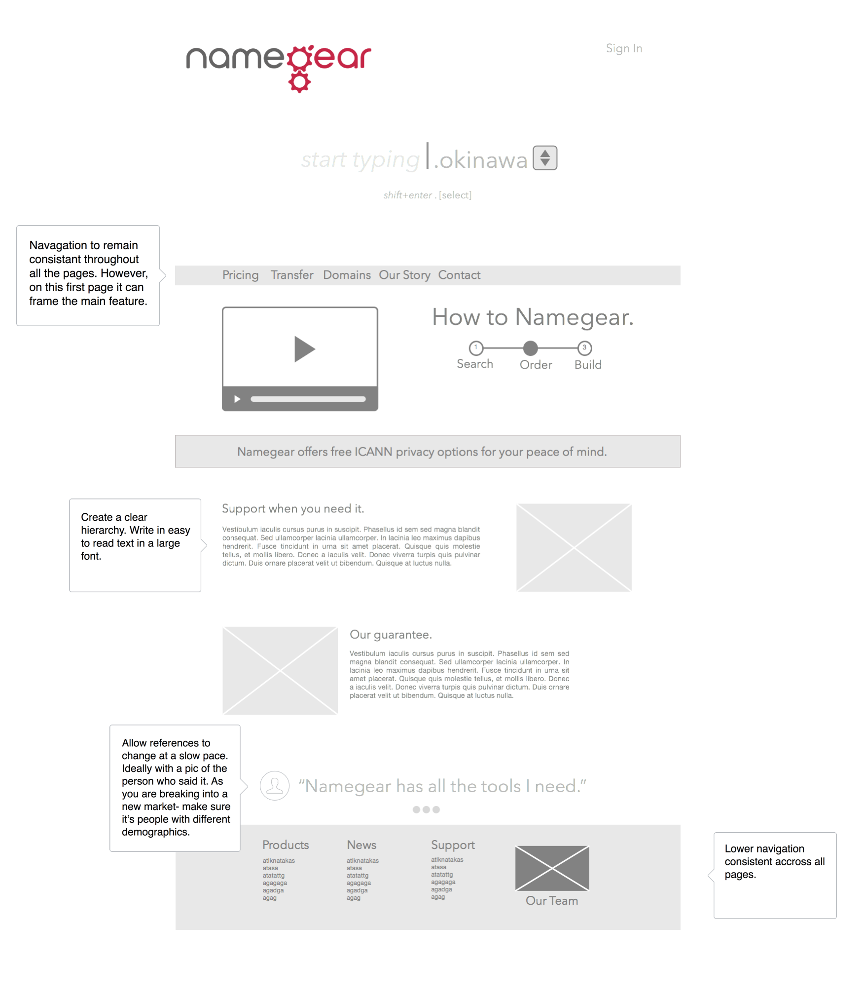

Anthrochick
namegear
redesigning a website in a cutthroat-competitive market
Brief
Namegear is a domain name registration service, targetting the English-speaking Asia-Pacific market. They aim to redefine the industry by offering innovative products that are secure and intuitive.
Namegear wanted to improve conversions on their website in two key areas: The registration of new domains and the transfer of existing domains.
My Role
User Experience Consulant
Duration
2 weeks
Tools
- Customer interviews
- Customer survey
- Conversion guides
- Customer journey maps
- Website user testing
Outcomes
- User personas
- Redesigned website wireframes
Researching
We crafted a survey to help identify how existing customers associate "trust" with domain registrars, and conducted interviews with friends/family to get a feel for general knowledge in the market. We also checked out other domain registration websites that Namegear recognised as close competitors. This way we were able to gather a surprising amount of understanding in a short period of time.
Surveys to understand the landscape
Interviews to get the details
Our interviews followed a conversation guide that we developed to assess participants domain knowledge, their motivations, and where they drop out in the conversion funnel. This allowed us to form a customer journey map.
Developing personas
We created three personas that were based on the interviews with fifteen participants and the survey. We styled the personas after Pokémon — a playful reminder of the culture of the Japanese company.
Motivation
- Wants to start a new business
- Motivated by social trends
- Attends meet-ups to network
Behaviours
- Deliberates over the 'right choice'
- Opportunistic and moves fast once a choice is made
- Discusses her ideas with colleagues
- Running her first or second business
Barriers
- Likely to let domains expire
- Mid-range technical level
- May need inspiration if chosen domain name is unavailible
Designing for two levels of experience
We found that there were two key customer segments: one with a strong technical background and one with a basic technical background. We used this to model different flows for each, then tested it against real users.
Redesigning with mockups
To rapidly test with real-user feedback, we started putting together some light weight wireframes of what a new design might look like. The two user flows gave us a foundation on which to drive out the design.
-
Send me an email!
zoe@anthrochick.com